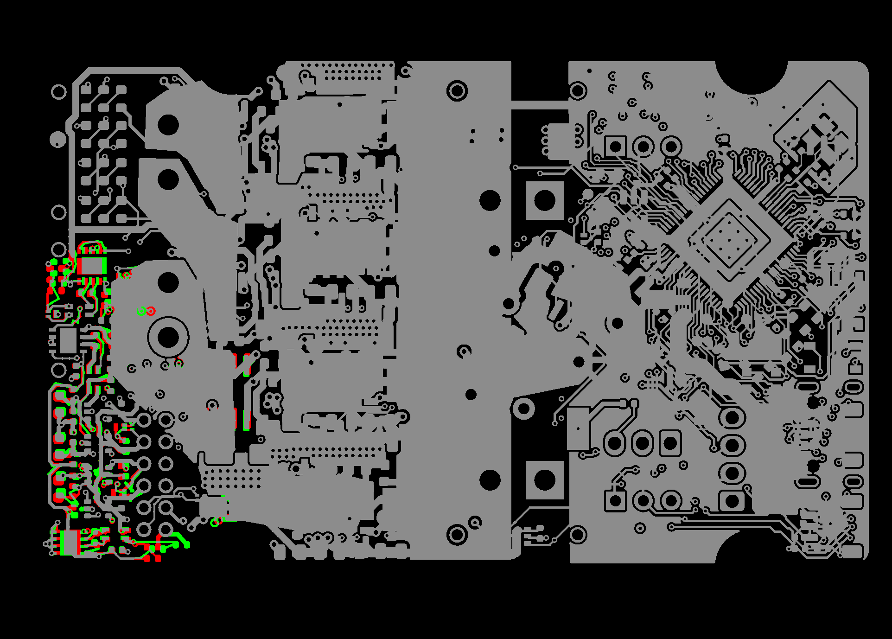
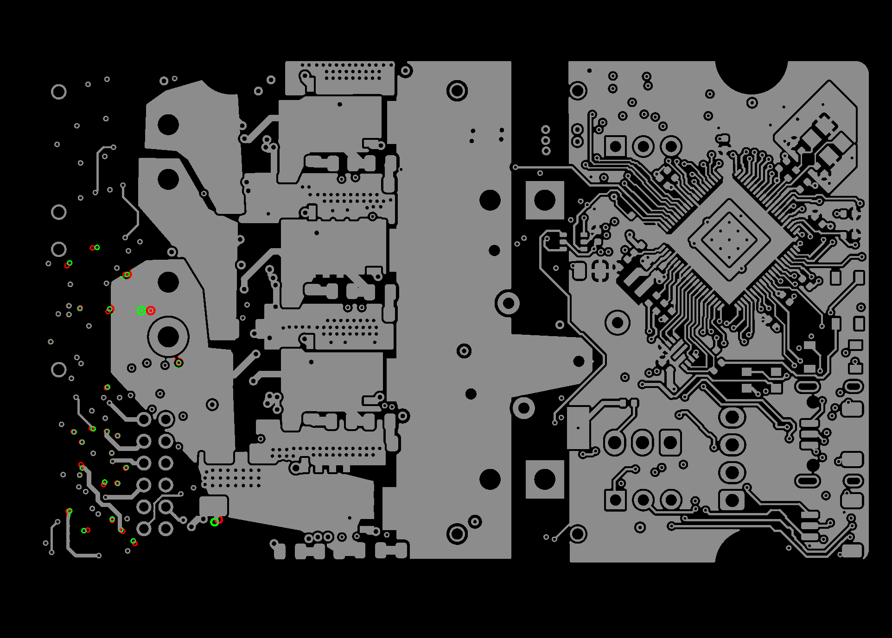
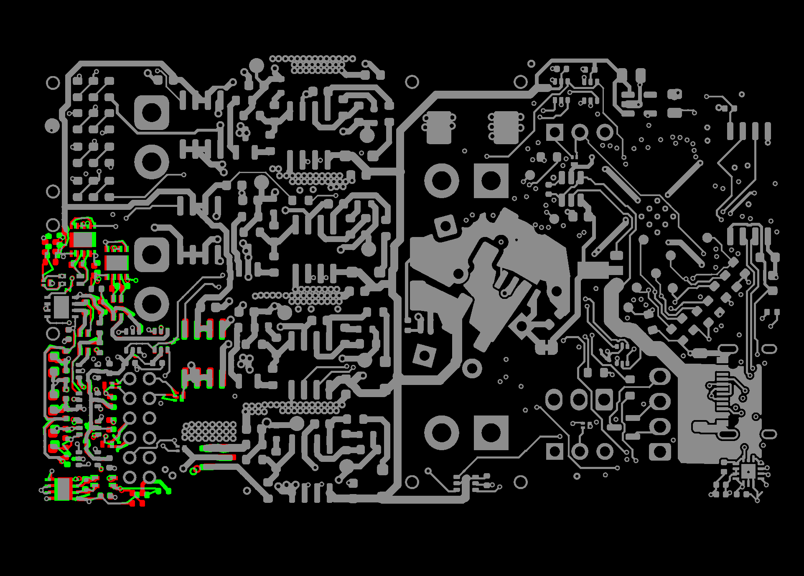
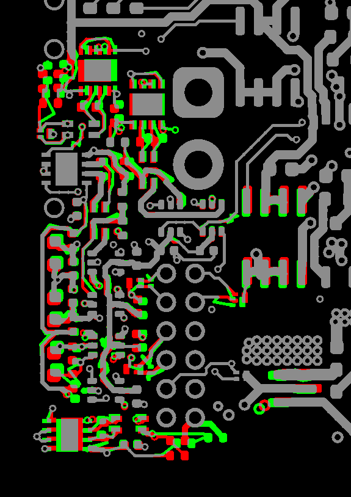
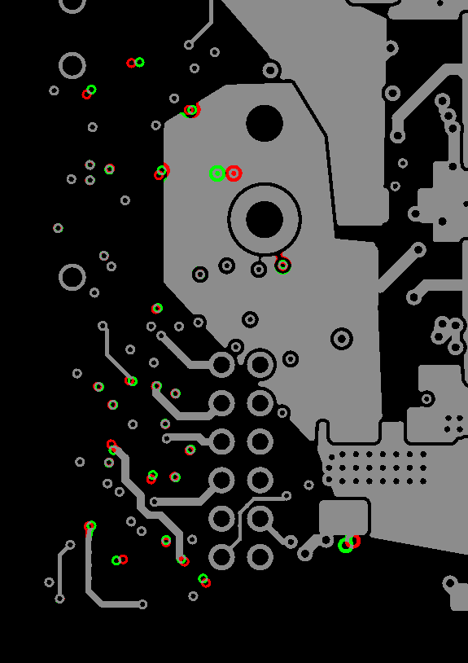
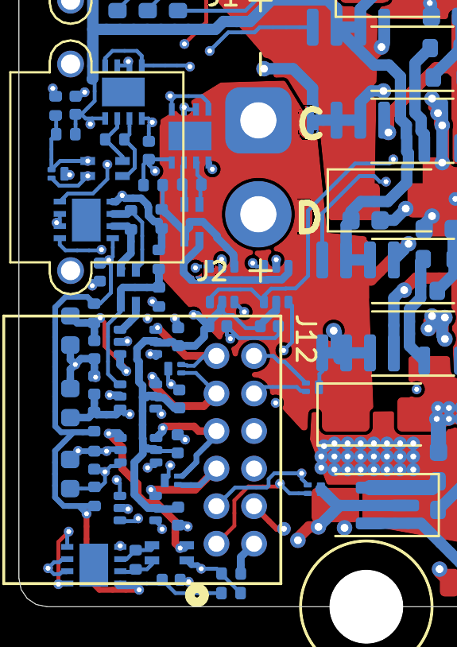
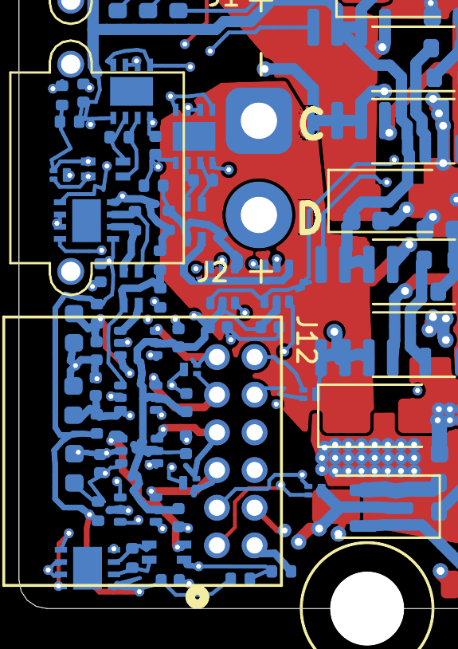

Creep: the morph, visually — now with mid-flight reroutes
Shipped board → rev-B placement in DRC-clean checkpoints, ripping and re-adding
blocking copper between boards · rev-b-fixes · 2026-08-09 ·
hardware/tools/jiggle2/
/EXT_ANALOG_SW daisy chain taught us that single-part line searches see a
neighbour as a wall even when the whole platoon could roll.
1 · Scrub the morph
Eighteen checkpoints, every one gate-clean. Checkpoints 6–17 are RR topology changes: between board k−1 and board k a few chains are ripped and re-added on new paths — both sides fully routed, so the rip never exists on any board. Changes mode diffs each checkpoint against the shipped board: gray copper is unchanged, red is where copper was, green is where it is now — motion reads red → green, and the long green arcs appearing from checkpoint 6 on are the reroutes. Render mode shows the board itself.

All motion concentrates in the encoder/termination corner (left edge) — the rest of the board stays untouched gray. Creep moves nothing it doesn't have to, and reroutes nothing it can't prove.
2 · Where copper moved, per layer (s=0 → 0.435)


3 · The encoder corner, up close
The moved cluster at 600 dpi. Red trailing / green leading edges show part travel; feed stubs stretch rather than detach (attachments), and the green paths with no red twin nearby are mid-flight reroutes — chains that gave up their shipped corridor to let the convoy through.




4 · How it moves (no code)
Every unit — footprint assembly, trace node, via — advances only as far as a line search against
per-pair DRC floors allows; α = 0 is a legal answer. Three escalations stack on top.
Groups: mutually-wedged convoy clusters (built from each cycle's clamp graph) take a
joint step with one shared progress increment, so intra-group pairs morph between two placements that
are both DRC-legal while the floors referee everything external. Reroutes: at a
stall, the clamp set names the copper wall; each blocking chain gets a grid-A* re-plan between its
current endpoints in the current geometry, with other-net moving pads masked swept to arrival
so the new corridor pre-clears the convoy. The result is re-verified by the same feasibility oracle
(shipped floors, per-edge grandfathering, every recorded attachment pair-wide) and rolled back
bit-perfectly if unprovable; a failed verify names its blockers, which get stamped wider for the
retry. Hard walls: parts whose straight path is clamped by copper that never moves
(J2's NPTH mounting holes) are excluded and reported — no mechanism in this phase can help them.
| solve.py projection | creep (report-only) | creep + reroute | |
|---|---|---|---|
| Clean checkpoints | 1 / 13 | 6 / 6 | 18 / 18 |
| Depth / arrived | s=1.0, dirty | s=0.404 · 6/49 | s=0.435 · 9/49 |
| Topology changes | — | 0 (stall = report) | 68 reroutes, 27 chains, 12 checkpoints |
| Stall meaning | trajectory unusable | reroute worklist | structural frontier (below) |
5 · Gate evidence
| checkpoints | s | kind | airwires | new violations | verdict |
|---|---|---|---|---|---|
| 0–5 | 0.000 → 0.417 | creep progress | 0 | 0 | OK ×6 |
| 6–9 | 0.425 | RR rounds 1–4 | 0 | 0 | OK ×4 |
| 10–12 | 0.432 | RR rounds 5–7 | 0 | 0 | OK ×3 |
| 13–17 | 0.435 | RR rounds 8–12 | 0 | 0 | OK ×5 |
kicad-cli 9.0.8, severity-error, vs shipped baseline 0. Dragged objects grow 1768 → 1817 across the trajectory as rerouted chains re-subdivide — the rip-and-re-add is visible in the boards themselves. Runtime: 529 cycles ≈ 11min solve + 4min gate.
6 · The frontier that remains
Reroutes cleared what a single-layer, same-net re-plan can clear (68 of them: GND 17, +3V3 12, Vdrive 11, /EXT_ANALOG_SW 7…). What's left is structural, and the stepper now names it precisely:
| wall | margins | why copper reroutes can't fix it |
|---|---|---|
Vdrive corridor | 59 | wide power net wedged between its own static pads and the convoy — needs a layer switch or the rev-B net-split rip |
GND stub forest | 55 | stubs and vias between group members; via relocation (not just chain reroute) would be next |
/EXT_ANALOG_SW daisy | 36 | chain endpoints ride the very parts that block each other — needs the coupled part+copper jump (move group AND reroute its interconnect in one checkpoint) |
/ENC_A_N_SW lane | 25 | same coupling, termination corridor |
| J2 NPTH holes | 24 | hard wall: C63 and R91 travel straight through the mounting keepout — only a curved part path helps, out of scope this phase |
Next phase, if wanted: the atomic group jump — teleport a wedged group by one step and reroute its interconnect against the post-step geometry in the same checkpoint. The verify machinery for it already exists; only the coupling is new.